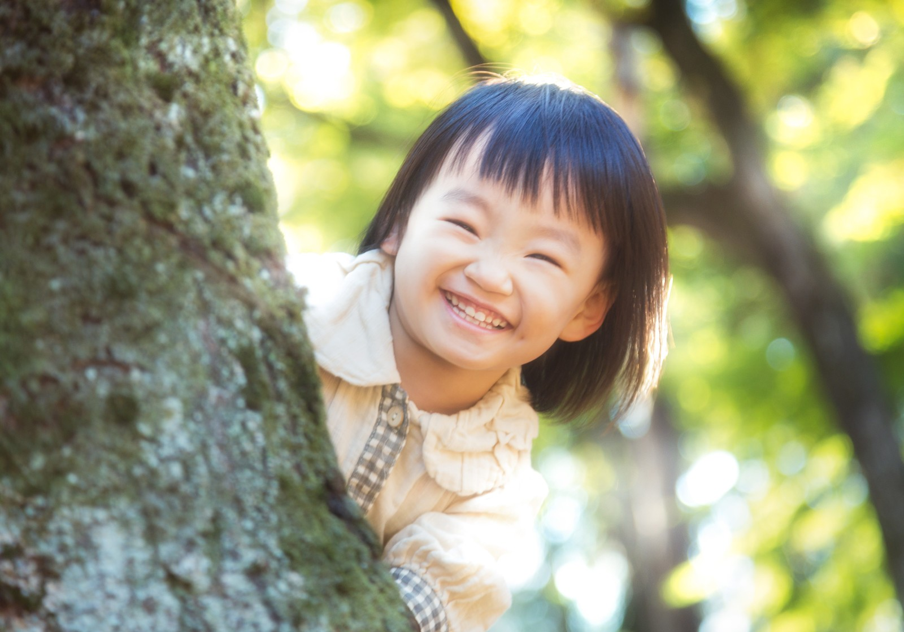

「理念」

SERVICE
過去に私自身が「イジメ」「暴力」「ネグレクト」「不登校」といった現代社会の中で問題とされているものを経験してきました。
当時は、「一人ぼっち」と感じながら様々なことを耐える日々を送っていました。そんな中、私を助けてくれた一人の友達がいます。
今までずっと、たった一人だと思っていた自分の世界観の中で「初めて味方ができた」と感じる事ができました。
その友達に救われた経験を通して私は、『たった一人、本当にたった一人だけでいいから、自分の味方になってくれる存在がいたら、人は救われる』という、とても大切なことに学びました。
自分自身が当事者であり、救われた経験があるからこそ今度は私自身が誰かの「まず一人目の味方」になったり、同じように誰かのまず一人目になる人たちを増やしたい。何か悩みを抱えた人たちが「ここが自分の居場所だ」と思える居場所を作る存在でありたいと強く想うと同時に、私の人生の全身全霊をかけて成し遂げていきます。
当時は、「一人ぼっち」と感じながら様々なことを耐える日々を送っていました。そんな中、私を助けてくれた一人の友達がいます。
今までずっと、たった一人だと思っていた自分の世界観の中で「初めて味方ができた」と感じる事ができました。
その友達に救われた経験を通して私は、『たった一人、本当にたった一人だけでいいから、自分の味方になってくれる存在がいたら、人は救われる』という、とても大切なことに学びました。
自分自身が当事者であり、救われた経験があるからこそ今度は私自身が誰かの「まず一人目の味方」になったり、同じように誰かのまず一人目になる人たちを増やしたい。何か悩みを抱えた人たちが「ここが自分の居場所だ」と思える居場所を作る存在でありたいと強く想うと同時に、私の人生の全身全霊をかけて成し遂げていきます。